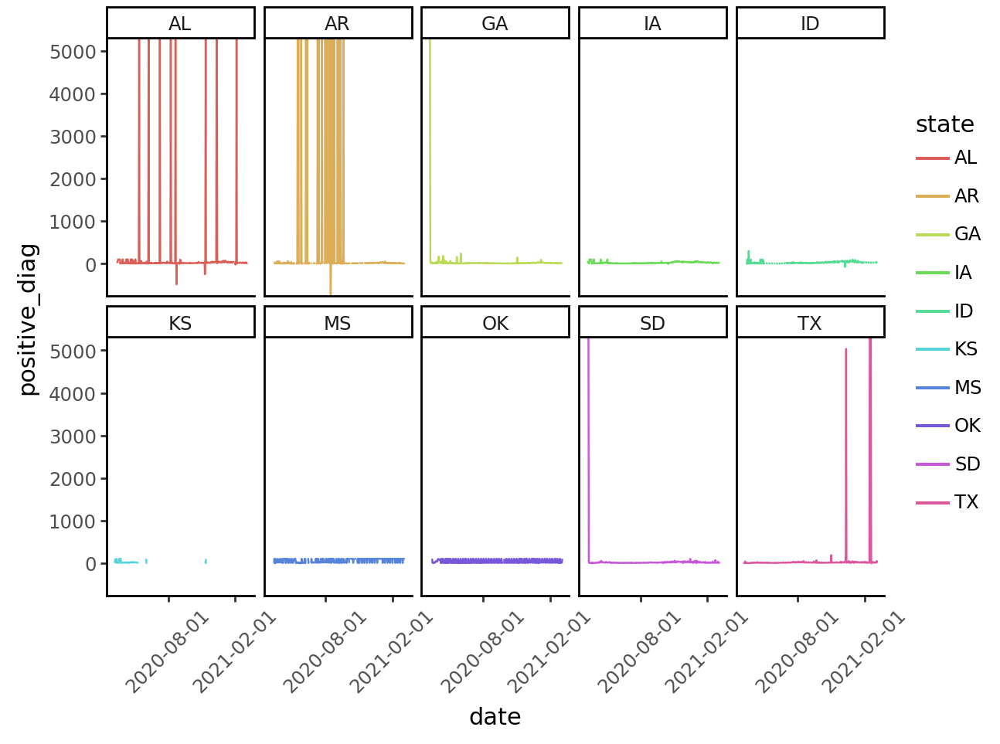

covid = pd.read_csv("data/covid_dates_split.csv")Write functions
Create and select columns
As we work towards building polished reports and plots, it may be useful to include the month name in our data set rather than the date. In this milestone, you’ll create a new variable that contains the month name associated with a month number.
Recreation
Part 1 - Import
Before you begin, you will need to import your data set. Use the code chunk below to read the data from the data file covid_dates_split.csv, which is stored in the data/ folder in your working directory. Be sure to save the data set to a variable named covid.
Part 2 - Write a function
Your task is to write a function named recode_month() that will accept an integer as input (e.g., 3) and return the associated month name:
- 1: ‘January’
- 2: ‘February’
- 3: ‘March’
- 4: ‘April’
- 5: ‘May’
- 6: ‘June’
- 7: ‘July’
- 8: ‘August’
- 9: ‘September’
- 10: ‘October’
- 11: ‘November’
- 12: ’December
Don’t worry about adding error checking for now (e.g., what if a number greater than 12 is input?).
def recode_month(integer):
months = {1: 'January',
2: 'February',
3: 'March',
4: 'April',
5: 'May',
6: 'June',
7: 'July',
8: 'August',
9: 'September',
10: 'October',
11: 'November',
12: 'December'
}
if isinstance(integer, str):
integer = pd.to_numeric(integer)
return months[integer]
else:
return months[integer]
recode_month(1)
recode_month('1')'January'Run the following code chunk to test your function on a few different values:
recode_month(1) # should return 'January'
recode_month(3) # should return 'March'
recode_month(5) # should return 'May''May'Part 3 - Apply
Using your function, add a new column to covid called month_name that contains the name associated with each numeric month value. Then, save it as data/covid_with_months.csv. Note: when saving, set index=False.
from numpy import vectorize
recode_month = vectorize(recode_month)
covid['month_name'] = recode_month(covid['month'])
covid
covid.to_csv('data/covid_with_months.csv')Extension
Use the code chunk(s) below to extend your work. Try something that you can learn from experimentation, a help page, or a package website.
Consider:
- Write a function that bins
hospitalizationsinto high, medium, and low using if else statements and cutoff values of your choosing. Do the same fordeathsandcases.How do states with high hospitalization counts compare to states with high death counts? Compared to states with high case counts? - Write a function that calculates the hospitalization rate as defined by
hospitalizations/cases. For ten states of your choosing, use this function to calculate the hospitalization rate for eachstateandmonthgroup. Visualize the result. How do the states compare to one another? Are there any differences or similarities that were surprising to you? - [any other research question of interest]
Alternately, working with a data set of your own, complete the following:
- Read in your data
- Write a function the performs an operation on your data
- Call the function, or use
.apply()to apply it to every row in the dataset
import pandas as pd
import plotnine as p9
from mizani.breaks import date_breaks
covid = pd.read_csv("data/covid_dates_split.csv")
covid.dropna()
# calculate cases/test ratio
covid['positive_diag'] = covid['cases'] / covid['tests']
# transform it to percentage
covid['positive_diag'] = covid['positive_diag'].apply(lambda x: x * 100)
# top ten states with higher positive diagnosis median
top_ten_positive_diag = covid.groupby(['state']).positive_diag.median().sort_values(ascending=False).head(10).index.values.tolist()
# filter df with top ten states
subset = covid.loc[covid['state'].isin(top_ten_positive_diag)]
#subset = subset.loc[subset['positive_diag'] < 4000]
# plot positive diagnosis on time
(
p9.ggplot(subset, p9.aes(x='date', y='positive_diag')) +
p9.geom_line(p9.aes(color='state'), group=1) +
p9.facet_wrap('state', nrow=2, ncol=5) +
p9.theme_classic() +
p9.scale_x_datetime(breaks=date_breaks("6 months"))
) + p9.theme(
axis_text_x = p9.element_text(rotation=45)
)/renvs/r/r4.2.2_py3.10.3/bionic/ac-03681e3-61febfe/pythonPackages/plotnine/geoms/geom_path.py:100: PlotnineWarning: geom_path: Removed 4 rows containing missing values.
# Categorize variable with 'high' and 'low' values, above or below variable median
import pandas as pd
covid = pd.read_csv("data/covid_dates_split.csv")
covid['cases'].describe()
def bin_var(var, var_median):
if var > var_median:
return 'High'
else:
return 'Low'
bin_var_vec = np.vectorize(bin_var)
covid['cases_category'] = bin_var_vec(covid['cases'], covid['cases'].median())
covid['deaths_category'] = bin_var_vec(covid['deaths'], covid['deaths'].median())